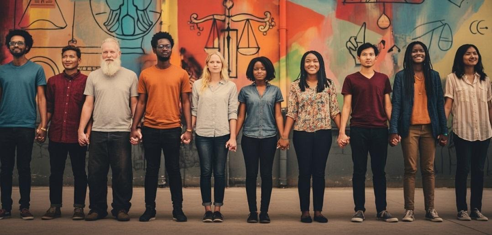

Our Causes
At Your Global Voice, we are committed to protecting human dignity, supporting communities in need, promoting animal welfare, and safeguarding our environment.
United by Compassion. Driven by Purpose. Committed to Change.

Human Rights & Dignity
Standing against persecution, discrimination, and injustice in all forms, and advocating for the fundamental rights and dignity of all individuals.
Read More →
To provide charitable assistance, support, and advocacy for individuals and communities who face persecution or discrimination based on religion, race, ethnicity, nationality, or national origin, and to help address the consequences of such persecution or discrimination.
Humanitarian Assistance and Relief
To provide charitable humanitarian assistance and relief to individuals and communities in need through the provision of food, clothing, housing assistance, essential supplies, and emergency assistance.
Animal Welfare Assistance
To provide charitable financial assistance and support for the care and well-being of animals.
Environmental Conservation and Sustainability
To conduct and support charitable environmental conservation and sustainability initiatives, including the preservation and restoration of forests, the planting of trees, the protection of natural resources, and environmental improvement initiatives.
Purpose is our starting point.
Learn about the areas that may shape future initiatives.